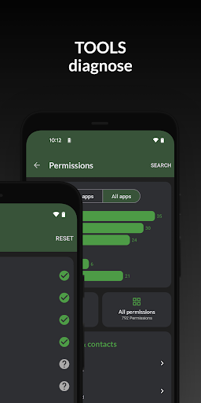

DevCheck 快问快答：验机、测电池、跑硬件，这一个 App 够不够？
DevCheck 是 Android 上的硬件诊断全能手——仪表盘实时读数、电池循环健康度、多点触控测试、充电功率检测，免费功能覆盖日常 90% 场景。这篇问答速查把你关心的七个问题一次性讲透。
整理一篇关于 DevCheck 的快问快答——这工具在 Android 验机和日常硬件诊断圈里存在感很高，但上手前总有人会问：它到底能干嘛、要不要花钱、和 AIDA64 比怎么样、哪些功能需要 Shizuku 配合？下面逐个答。
DevCheck 是什么？谁需要装？
一句话：Android 硬件诊断 + 实时读数的全能工具箱——这就是DevCheck官网主打的那个 Android 硬件诊断应用。装在手机上，打开就能看到 CPU 实时频率、内存占用、电池温度、充电功率，还带一整套硬件测试——屏幕触控、充电功能、传感器、摄像头参数，都能直接跑。
两类人最需要它：买二手机的验机党和对自己手机硬件状态在意的发烧友。前者用它 30 秒就能筛掉触控死点、电池老化、充电协议不匹配的坑机；后者日常挂着仪表盘看 CPU 降频、电池温度变化，判断散热和续航表现。普通用户也装一个不吃亏——免费版够用，体积小，放抽屉里半年用一次也行。

怎么装？需要 root 吗？
从DevCheck下载拿安装包，装完直接打开就能用——大部分功能免费版、无 root 即可跑。仪表盘实时读数、多点触控测试、充电测试、传感器列表这些核心功能，普通权限全覆盖。
少数进阶功能才需要额外配合：电池循环次数和健康度在高通平台部分机型上能读到，但需要装 Shizuku 授予更高权限；联发科平台普遍屏蔽了这两个字段，装什么都没用，别在这上面浪费时间。深度解锁那一套（读全机温度传感器、部分 SoC 细节）同理，Shizuku 是门槛。Root 不是必须，有 Shizuku 基本够了。
核心功能到底怎么用？挑三个最实用的场景说
场景一：验机时 30 秒筛触控死点。进「测试」标签页 → 多点触控 → 点测试，屏幕变纯色后用手指从边角滑到边角、中央画一遍。有区域不出轨迹就是死点，双指捏合变单指就是多点触控传感器坏了——二手 Android 这是必跑项，维修成本高得离谱。
场景二：看充电协议对不对。插上充电器后进充电测试页，等 30 秒看功率读数。快充握手成功的话会爬到几十瓦（65W、100W），功率一直只有几瓦说明充电头或线材不匹配快充协议；忽高忽低跳变大概率是线材接触不良或充电口有灰。拔下充电器电流应该立即归零。
场景三：判断电池要不要换。电池页看三个数：循环次数、健康度百分比、当前容量 vs 设计容量。锂电池设计寿命 500-800 次循环后容量降到 80% 以下，二手机循环接近或超过这个值要留个心眼；健康度 85% 以下基本可以判定老化明显；估算容量低于设计容量 85% 也是换电池的信号（详细解读可以去DevCheck文档翻一下）。不看发布年份，看循环次数和健康度——一台 2021 年循环 300 次的手机，电池状态可能比 2020 年循环 800 次的还好。
有什么坑需要注意？
三个常见坑。第一，联发科平台别纠结电池健康度，接口被厂商普遍屏蔽，装 Shizuku 也白搭，不是 DevCheck 的问题。第二，实时数据和系统读数可能有差异——电池页的电流电压和充电测试页的数值理论上应该互相印证，差异大的话说明其中一个读数不准，别拿单一数据源下结论。第三，别把深度休眠占比当成续航好坏的唯一指标，它反映的是后台唤醒管理，但实际续航还取决于屏幕、网络、CPU 调度等一堆因素。
还有个小细节：仪表盘每秒刷新一次，长时间盯着 CPU 频率变化可以判断散热表现——负载上去后频率能不能稳住、会不会因为温度墙突然降频，一跑就清楚。
免费版够不够用？要不要付费？
免费版覆盖日常 90% 场景，仪表盘、充电测试、多点触控测试、传感器列表、电池基本读数——这些全免费。付费版解锁的是一些进阶项：全机温度传感器深度面板、部分 SoC 细节、可能还有无广告，对普通用户来说不是必须的。
建议先装免费版跑一周，觉得哪块功能天天用再考虑付费。大部分人永远用不到付费解锁的那几项。
和同类工具比怎么样？AIDA64、CPU-Z 这些
DevCheck 的优势在Android 原生适配 + 硬件测试功能集成。AIDA64 也能读参数，但没有 DevCheck 这么完整的测试套件——多点触控、充电功率实时测、屏幕坏点这些，AIDA64 是没有的。CPU-Z 更偏向参数展示，测试能力几乎为零。
反过来，AIDA64 的参数深度（比如传感器的原始寄存器值）DevCheck 可能不如，但对 99% 的用户来说不需要。DevCheck 把"读参数"和"跑测试"整合在一个 App 里，验机时一个 App 就够了，不用来回切。
值不值得长期装着？
值得。体积小、无后台耗电压力、免费版够用，验机、跑测试、日常查硬件状态都用得上。如果你手里有二手机要验、或者对自己爱机的电池和散热状态在意，DevCheck 是目前 Android 上最顺手的硬件诊断工具，没有之一。
最后一句：免费版装上不亏，Shizuku 能配就配，联发科平台别纠结电池健康度——够用就好。整套说明文档和仓库源码在 GitHub、Gitee、GitCode 都有同步，国内访问 Gitee 和 GitCode 体验会更顺畅。